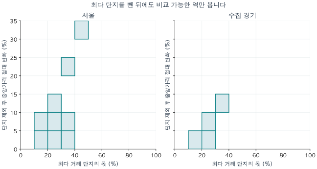

역 이름으로 읽는 가격 지도 · 5 / 10
한 단지의 거래를 빼면 역 주변 84형 가격은 얼마나 달라질까?
서울과 수집 경기에서 역 주변 84형 거래가 한 단지에 얼마나 몰렸는지 확인합니다. 최다 거래 단지를 제외한 중앙가격 변화와 비교 가능 범위도 살펴봅니다.
분석 기간 · 2025년 7월~2026년 6월 매매 · 현재 역 위치의 직선거리 | 자료 기준일 · 2026-10-29
같은 역 주변 84형 거래를 모아도 한 단지에 계약이 몰릴 수 있습니다. 거래 30건과 단지 다섯 곳 이상이 있는 역 중에서 한 단지가 거래의 30% 이상을 차지한 경우가 서울은 40% 이상 50% 미만, 수집 경기는 50% 이상 60% 미만이었습니다.
한 단지에 거래가 얼마나 몰렸나요?
2025년 7월부터 2026년 6월까지 확인된 84형 매매에서, 역 직선 700m 안에 드는 단지의 거래를 모았습니다. 한 역에서 가장 거래가 많은 단지의 건수를 그 역 주변의 전체 거래로 나눴습니다.
| 최다 거래 단지의 몫 | 서울 | 수집 경기 |
|---|---|---|
| 20% 미만 | 20% 이상~30% 미만 | 10% 미만 |
| 20% 이상~30% 미만 | 30% 이상~40% 미만 | 30% 이상~40% 미만 |
| 30% 이상 | 40% 이상~50% 미만 | 50% 이상~60% 미만 |
표는 역의 비중입니다. 모든 거래를 합쳐 특정 단지가 몇 건을 차지했는지 묻는 계산과 분모가 다릅니다.
최다 거래 단지를 빼면 어떻게 되나요?
최다 거래 단지를 제외하고도 거래 30건과 다섯 단지가 남으며, 남은 한 단지의 비중이 20% 이하인 경우를 확인했습니다. 이 조건까지 맞는 역은 두 지역 모두 기본 비교에 들어온 역의 30% 미만이었습니다.
제외해도 비교가 가능했던 역에서 중앙가격이 바뀐 크기의 가운데 값은 서울과 수집 경기 모두 3% 이상 4% 미만이었습니다. 서울에서는 이 비교가 가능한 역 가운데 30% 이상 40% 미만에서 가격이 5% 이상 달라졌습니다. 거래가 부족해 비교할 수 없게 된 역은 이 변화 범위에 포함되지 않습니다.

같은 거래 집중도 구간에서도 가격 변화의 크기가 달랐습니다. 그림은 최다 거래 단지의 몫을 10%포인트, 가격의 절대 변화율을 5%포인트 폭으로 표시했습니다. 제외 후 표본 조건이 유지된 역들 사이의 관계이며, 비교가 성립하지 않은 역의 변화를 이 그림에서 추정하기 어렵습니다.
후보 역의 가격을 읽는 순서
같은 기간과 면적, 거리에서 거래 건수와 단지 수를 함께 확인하세요. 한 단지에 거래가 많이 몰렸다면 그곳의 연식과 주택형을 따로 보고, 나머지 단지의 최근 거래를 비교합니다.
자료와 제외 기준
여러 신고 위치에서 최근접 역이 같은 단지를 사용했습니다. 최다 거래 단지가 동률인 경우 각 단지를 하나씩 제외하고, 어떤 경우든 비교 기준을 통과한 역에서 중앙가격의 가장 큰 절대 변화를 사용했습니다.
거래는 국토교통부 실거래가 공개시스템, 역은 국가철도공단 표준 역사정보를 바탕으로 정리했습니다.
역별 거래 집중도와 최다 단지 제외 후 가격 변화(JSON)
분석·집필: 파파펭귄 (Nobot Kang). 에이전트로 단지별 계약 건수와 제외 계산을 검산했습니다.